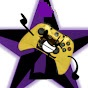

Here is where you can learn more about my personal life, and what makes me who I am.
The Basics:
My name is Kalen Tobin. I am a resident of Woodcliff NJ, and I am a creative visionary. Currently, I
am enrolled at Monmouth University for Creative Writing courses.
Background:
I am from the Tobin Family. We are currently of two different sides from two different origins.
The Holton side is from my mother, an immigrant family from Europe that came here many years ago. My
grandfather grew up during World War 2, and participated at the offices to assign soldiers jobs
years after. Mom's brother, Jeffry, has his own branch with two children and three dogs(You have no
idea how many they've had over the years).
On the other side is the Tobins, my father, who are of Irish heritage. Tobins have been around for
centuries, and we are just one of many across America. The name is derived from Anglo-Norman
settlers in Irland after the Strongbow Invasion. The word simply translates to "God is good" in
Hebrew.
Education:
My education is from Marlboro High School. My previous schools included Marlboro Memorial Middle
School (MMMS), and Defino Elementary. I've had my laughs, my struggles, and more along the way, but
there have always been those that have helped me along the way, and I greatly thank them for that!
Not to pick favorites, but I’d prefer MHS over the other two.
Favorite Shows:
My personal favorite shows include the OG Transformers, Transformers EarthSpark, Murder Drones, and
My Life As A Teenage Robot (So yeah, anything with robots in it). Shows like them are what fueled my
creativity at such a young age. But still, I totally recommend watching all of them!
Hobbies:
My personal hobby boils down to creating stories of different kinds on Google Sites, one of them is
out there already. I have been a storyteller for almost all of my life, and I’m not going to give it
up now, while I’m on a roll! To think that it all started because of a few movies I watched and
books I read.

Accounts:
I personally run a Youtube channel under the name KGT Studios. It’s where many of my little ideas go
when I want to show them off to the world.
I have more than seventy videos already up with more than eighty subscribers! If you want to check
them out, click the logo above.
I'm An Ally:
I am an ally to the LGBTQ community. I accept people for the way they are and refuse to judge them
for the smallest little things, this includes sexuality and gender identity. As long as you are good
at heart, you’re good in my book!